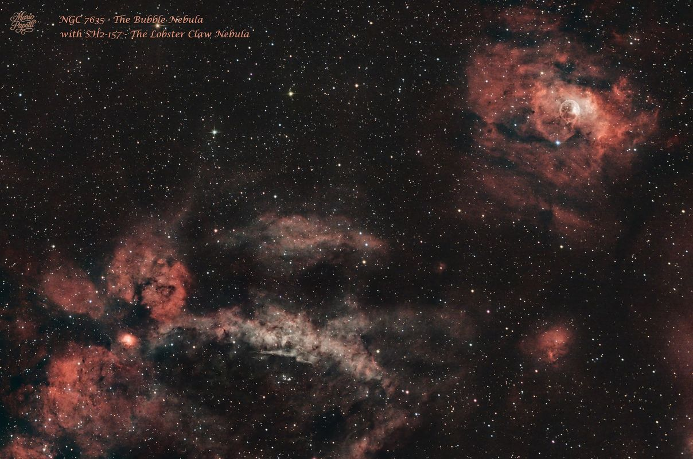
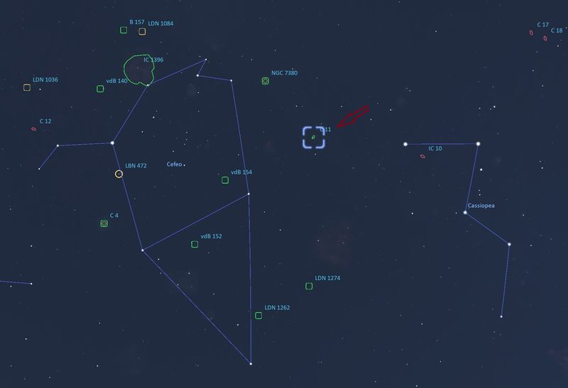
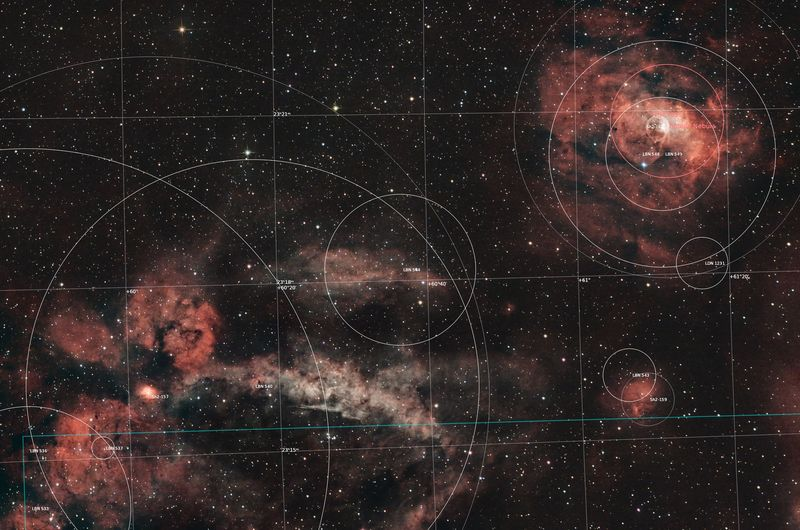

C 11 • NGC 7635 • SH2-157 • SH2-159
Bubble Nebula e Lobster Claw Nebula
C 11 • NGC 7635 • SH2-157 • SH2-159
Bubble Nebula and Lobster Claw Nebula

In questa mia immagine, ripresa la sera del 22 Agosto dal Colle della Forchetta - Chiaves (TO), in alto a destra è visibile la Bubble Nebula o Nebulosa Bolla, catalogata come Caldwell 11 (C 11) e NGC 7635. A sinistra è visibile una parte della SH2-157 – The Lobster Claw Nebula, nota anche come la Nebulosa dell'Aragosta. In basso a destra nell'immagine è inoltre visibile la piccola nebulosa SH2-159. In this image, taken on the evening of August 22nd from Colle della Forchetta - Chiaves (TO), the Bubble Nebula, catalogued as Caldwell 11 (C 11) and NGC 7635, is visible in the upper right. To the left, part of SH2-157 – The Lobster Claw Nebula, also known as the Lobster Nebula, is visible. The small nebula SH2-159 is also visible in the lower right of the image.
Queste nebulose sono nella costellazione di Cassiopea, ai confini con la costellazione di Cefeo. Sono nebulose ad emissione: si tratta di regioni H II ben visibili nella banda dell'Hα, dove l'emissione è dovuta alla ionizzazione dell'idrogeno da parte della radiazione ultravioletta emessa dalle stelle giovani e calde. These nebulae are in the constellation of Cassiopeia, bordering the constellation of Cepheus. They are emission nebulae: H II regions clearly visible in the Hα band, where the emission is due to the ionization of hydrogen by ultraviolet radiation emitted by young, hot stars.
La mappa mostra la posizione della regione ripresa, tra Cassiopea e Cefeo, con l'indicazione degli oggetti presenti nell'immagine. The map shows the position of the imaged region between Cassiopeia and Cepheus, with the objects present in the image.

La versione annotata permette di riconoscere le principali strutture della regione ripresa e di confrontarle con l'immagine finale. The annotated version makes it possible to identify the main structures in the imaged region and compare them with the final image.

| Nome Name | Bubble Nebula |
| Cataloghi Catalogues | Caldwell 11 (C 11) • Sharpless 162 (Sh2-162) • NGC 7635 |
| Costellazione Constellation | Cassiopea / Cassiopeia |
| Distanza Distance | da 7.100 a 11.000 anni luce 7,100 to 11,000 light-years |
| Tipo di oggetto Object Type | Nebulosa a emissione / Regione H II Emission Nebula / H II Region |
| Dimensione apparente Apparent Size | 15′ × 8′ |
| Magnitudine apparente Apparent Magnitude | 10 |
| Caratteristica principale Main Feature | Bolla intorno a BD+60°2522 Bubble surrounding BD+60°2522 |
Hα e H II non sono la stessa cosa. È facile confonderli perché entrambi riguardano l'idrogeno. Hα and H II are not the same thing. They are easily confused because both involve hydrogen.
La differenza fondamentale è questa: The fundamental difference is this:
Quando una stella molto calda, giovane e massiccia emette radiazione UV, ionizza H I che passa ad H II, cioè l'idrogeno perde l'elettrone e diventa H II. When a very hot, young and massive star emits UV radiation, it ionizes H I, which changes to H II; the hydrogen loses its electron and becomes H II.
Poi, quando un elettrone libero viene ricatturato da un protone, può passare attraverso diversi livelli energetici. Durante uno di questi passaggi viene emesso un fotone Hα ed avviene una ricombinazione: Then, when a free electron is recaptured by a proton, it can pass through different energy levels. During one of these transitions, an Hα photon is emitted and recombination occurs:
H II + elettrone → ricombinazione → emissione Hα → luce rossa a 656,3 nm H II + electron → recombination → Hα emission → red light at 656.3 nm
Quindi: H II descrive lo stato dell'idrogeno (ionizzato), mentre Hα descrive la luce emessa dall'idrogeno durante una particolare transizione atomica. Therefore: H II describes the state of hydrogen (ionized), while Hα describes the light emitted by hydrogen during a particular atomic transition.
La frase «Si tratta di una regione H II, ben visibile nella banda dell'Hα» indica pertanto che la nebulosa è una regione di idrogeno ionizzato e che la sua emissione è particolarmente evidente osservandola nella riga di emissione Hα. The phrase “This is an H II region, clearly visible in the Hα band” therefore indicates that the nebula is a region of ionized hydrogen and that its emission is particularly evident when observed in the Hα emission line.
La Nebulosa Bolla NGC 7635 (nota talvolta come C 11) è una nebulosa diffusa la cui caratteristica principale è una "bolla" di vuoto circondata dalla nebulosa, causata dal vento stellare della giovane stella centrale, di magnitudine 8,7. Essa fu identificata per la prima volta da William Herschel nel 1787 e, a causa della sua forma circolare, fu a lungo scambiata per una nebulosa planetaria. Studi recenti hanno appurato invece che si tratta di una nebulosa ad emissione. The Bubble Nebula NGC 7635 (sometimes known as C 11) is a diffuse nebula whose main feature is a "bubble" of vacuum surrounded by the nebula, caused by the stellar wind from the young central star, at magnitude 8.7. It was first identified by William Herschel in 1787 and, due to its circular shape, was long mistaken for a planetary nebula. Recent studies have confirmed that it is actually an emission nebula.
La Nebulosa dell'Aragosta SH2-157 è una nebulosa a emissione debole situata a circa 11.000 anni luce di distanza nella costellazione di Cassiopea. Questa nebulosa contiene alcune regioni molto compatte, fra le quali la più cospicua è Sh2-157A; si tratta di un addensamento luminoso particolarmente visibile nella banda dell'Hα. The Lobster Nebula SH2-157 is a faint emission nebula located approximately 11,000 light-years away in the constellation Cassiopeia. This nebula contains several very compact regions, the most conspicuous of which is Sh2-157A; it is a luminous concentration particularly visible in the Hα band.
Nell'immagine è inoltre visibile la piccola nebulosa SH2-159. The small nebula SH2-159 is also visible in the image.
Questa immagine l'ho ottenuta dall'integrazione di: This image was obtained by integrating:
Ripresa la sera del 22 Agosto dal Colle della Forchetta - Chiaves (TO). Captured on the evening of August 22nd from Colle della Forchetta - Chiaves (TO).
| Telescopio Telescope | GSO 154/600 Newtonian |
| Camera principale Main Camera | ZWO ASI 294 MC Pro |
| Telescopio guida Guide Scope | 60/240 |
| Camera guida Guide Camera | ZWO ASI 120 MM Mini |
| Montatura Mount | Sky-Watcher HEQ5 SynScan GOTO |
| Acquisizione Acquisition | ZWO ASIAIR Pro |
| Elaborazione Processing | PixInsight |
L'immagine è stata elaborata interamente con PixInsight utilizzando il mio workflow RGB personale, comprendente calibrazione WBPP, calibrazione cromatica SPCC, riduzione del rumore, stretching, ottimizzazione dei colori e miglioramento finale del contrasto. The image was processed entirely in PixInsight using my personal RGB workflow, including WBPP calibration, SPCC colour calibration, noise reduction, stretching, colour refinement and final contrast enhancement.
Questa ripresa comprende una regione molto ampia e ricca di nebulosità, nella quale la Nebulosa Bolla rappresenta uno degli elementi più riconoscibili, mentre la debole SH2-157 si estende in una vasta area della composizione. This image covers a very large and nebula-rich region, in which the Bubble Nebula is one of the most recognizable features, while the faint SH2-157 extends across a large part of the composition.
Il mio obiettivo è sempre di ricavare tutti i dettagli senza accrescere il rumore ma mantenendo un aspetto il più naturale possibile. My goal is always to extract as much detail as possible without increasing noise, while maintaining the most natural appearance possible.